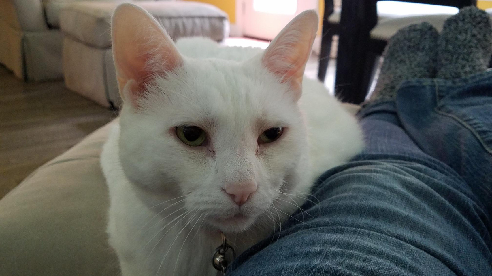
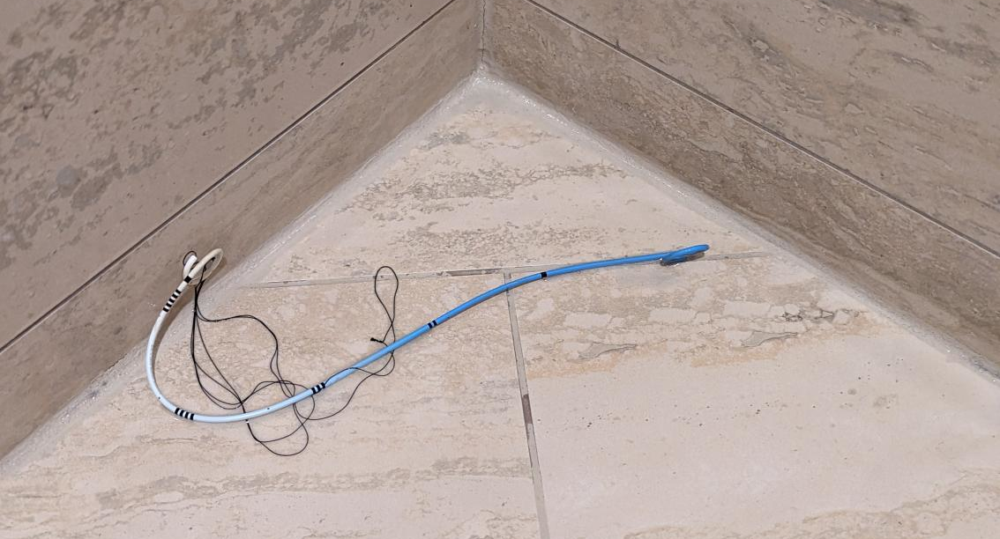
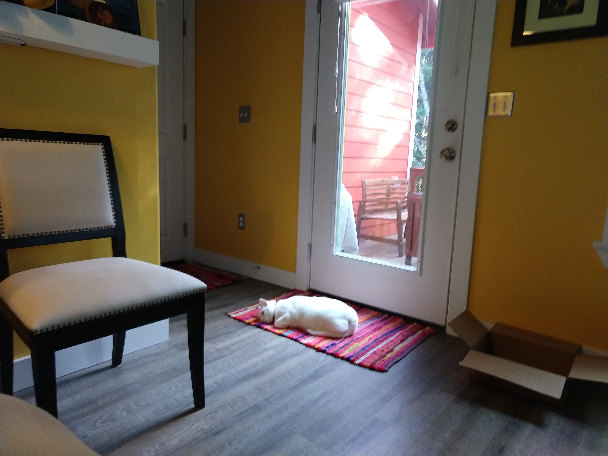

Library and library-adjacent folk aren't always the good guys.
OCLC provides, "bibliographic, abstract and full-text information to anyone." They provide a nifty service but are run by squiffy iffy folk who seem to have forgotten the spirit of libraries. They're currently suing Anna's Archive for scraping publicly available data.
Uncool.
To learn more about what the groovy Anna's Archive did, read on, Macduff.
(b. 25 July 2005) 29 December 2013 to 07 February 2024
Snowflake. Sweet Pea. Great White. Pretty Kitty. Sweetheart. Beautiful. Beautiful One. Honey Baked. Tenacious C. Darling One. Gatta Bianca. Her Nibs. Saucy Minx. Trouble. Little One. Beauty. Bella Ragazza. Our Girl. Queen B. White Puma

Project Manhigh out of Minnesota "was a pre-Space Age military project that took men in balloons to the middle layers of the stratosphere, funded as an aero-medical research program." "The flights reached the stratosphere at around 100,000 feet to study the effects of high altitudes on humans"
Manhigh I launched from the South St. Paul Airport.
Manhigh II launched from Crosby, MN.
Project Manhigh on PBS. Project Manhigh balloon action.
Whenever asked, I say my first concert was Paula Abdul's Under My Spell Tour (with opener Color Me Badd of I Wanna Sex You Up and I Adore Mi Amor fame) back in the early 90s.
This really messes with my Internal Timeline Belief System (or ITBS, natch) as I would have sworn I was still in high school when I saw this concert.
I was not.
The two things I remember about this concert are running into the guy who got me the tickets (at a discount, thanks!) in the bathroom, and trying to walk in a straight line when leaving the concert. This concert is where I learned that loud music can mess with your balance.
In the same vein, the first concert I saw in college (actually, come to think of it, the second one, I guess) was just a few months later, Guns N' Roses' Use Your Illusion Tour and the two things I remember about that tour was getting frisked by some random dudes saying they were security and being given the opportunity to occasionally use a cute girl's binoculars in the nose bleed seats.
All of the above is immaterial (you're welcome!) because my actual first concert was Gerard. Gerard was kind of the Menudo of Milwaukee, Wisconsin. I say Menudo because, as I understand it, their lineup kept changing. Again, I obviously didn't remember the music from the show. I would have said they were a cover band, but it turns out they made their own music. What I do remember is bringing my autograph book and having one of the female singers sign it after the show. I was very starstruck and she was very kind (asking me my name and telling me her brother had the same name as me) in signing my silly autograph book.
Huge crush!
Parents Defending Schools and Libraries: Parents supporting the right to read and opposing book bans, censorship and education intimidation.
Get notified of censorship in your area: Often, all it takes to prevent a book from being pulled from a shelf or a lesson plan censored is a few parents or community members expressing support. This is hard to do if you are unaware of efforts to censor schools and libraries. We will let you now whenever a book or lesson is challenged and provide you with context and information so you can decide if you want to help push back.
Book resumes: It can be difficult to know what to say when defending a book. These "book resumes", created in partnership with the Virginia Library Association and the New Jersey Association of School Libraries provide information on many of the most challenged titles. They include a plot summary, reviews, awards, lists, and some responses to challenges.

Start with something completely random...something pulled entirely out of the blue: urinary meatus.
Not a sexy turn of phrase.
Say there's a kidney stone that will probably pass in a day or two. An OTC pain cocktail will surely be enough.
Four days later it is not.
No matter how many OTC drugs you take the pain is what John Hopkins calls, "excruciating and unforgettable."
So you go to a hospital eight days later and get prescription drugs which don't help much and find out the darned thing is stuck in the ureter and they'll have to use freaking lasers to get rid of it and then - and then! - they'll maybe stick a string in you where one end comes out the urethra and the other end is attached to a stent to help keep the ureter open so the kidney can send fluid to the bladder AND IN A COUPLE OF DAYS YOU MIGHT BE EXPECTED TO PULL IT OUT YOURSELF DURING A NICE HOT SHOWER.
You'll have to pull out your penis string. Like a bad clown act. And how any doctors have wanted to make the string look like little colored handkerchiefs?
And I can't even put in contact lenses, for gosh sake.
He'd been training for this moment his entire life.
Literally his entire life.
The training had kicked up a notch about ten years ago. When he thinks about it, though he rarely does, that's when the training truly began in earnest.
But still...his entire life.
He sat there. Every muscle in his body flexed. Strained. His legs shook from the effort. His face quickly turned pink, then red, as his gaze slowly unfocused, fixed somewhere in the half distance. Sweat dripped from his unkempt hair. His vision grayed around the edges. The veins in his forehead throbbed visibly.
Despite all his training, he'd forgotten to breathe. Breathe, damnit! He shouted inside his head. Breathe! A whimper escaped his throat, a surprised little squeak of a whimper, then he pursed his lips tightly and a long, shaky exhale slowly escaped.
He reversed flow and inhaled through his mouth. It sounded like the air rushing through an open window while driving down the interstate at speed.
When he focused on his breathing he lost focus on everything else. "Come...on," he hissed through gritted teeth. "Concentrate!"
In his attempt to concentrate on the task at hand, he stopped breathing once more. Shortly thereafter he collapsed off the toilet, passed out from exertion and lack of oxygen.
His body immediately relaxed. He began to breathe normally. The thing he'd been training to do his whole life happened. His bowels loosened. Out came a foul-smelling stream of solid and liquid waste smelling of rum, coke, bar pickles, and mayo.
Hours later when he sobered up enough, his body awoke. He discovered himself on the floor covered in his own filth. Everything ached the acute pain of a kidney stone passing through a ureter. He wiped the side of his face he'd been lying on with his hand and managed only to smear the filth around, getting some in his mouth.
It was okay. He could neither taste nor smell anything.
Huh. Chunky. He thought.
He got to his knees, rested his forearms on the toilet lid, and dry heaved a coupe of times. It was there, cozied up intimately to the porcelain toilet, that he finally had his eureka moment: When drinking to the point of debilitating intoxication and constipation, make sure you've had so much that you pass out! The body wants to defecate! Get out of its way so it can do its thing!
It's so simple, he thought to himself as he pulled himself up by the grab bars in the handicapped stall of the women's bathroom at The Sloppy Penguin. Why didn't I think of it before? He struggled to pull up his underwear, finally remembered he wasn't wearing any, then pulled up his pants. A decade of heavy drinking and I'm just now figuring out I should pass out to defecate. It's so simple!
He stumbled out the bathroom, into the bar, and out the front door where the sun was just starting to lighten the eastern sky. He squinted with pain at the pastel colors, then turned toward the wall of the bar where he saw the hose. He staggered to it, turned on the water, and hosed himself off as best he could.
The cold water will help me sober up for the drive home, he thought to himself.
He dropped the hose, water still running, limped to his car, then turned back to look up at the sign on the roof of the bar - it was orange neon and showed a penguin waddling then falling over after getting hit by a flying beer bottle. Yeah, he thought to himself. I can do this. He opened his car door, hopped in, started it, threw it in drive, and pulled out of the parking lot, weaving erratically across both lanes of the county road.
He was very much looking forward to a test run of his new approach to drunken defecation tonight. He smiled, chunky brown bits gleaming on his teeth, as he drove toward the promise of a new day in the rising sun.
When COVID hit the U.S. my wife and I were lucky enough to work from home. We opened all our blinds during the daytime and waved at people who walked past the house. They all waved back, whether they knew us or not.
Neat.
A couple of times a week the Fedex delivery guy would deliver something for us right after I'd sat down to breakfast. He'd pop out of the truck, we'd wave, I'd eat my cereal, and he'd grab our package and put it on the doorstep.
One morning, after a couple of weeks of this, I sat down to breakfast. Fedex guy showed up. We waved. He grabbed the package from the truck and I ran to the door and opened it. We smiled at each other like old friends.
Nifty!
Then he tried handing me the box.
I balked. My smile wavered. His smile wavered.
Awkward.
No one knew yet how COVID spread. We were quarantining all mail and outside packages for...what...a couple days? A week? Whatever the recommendation was at the time. I was not prepared to touch anything or anybody.
He put the package down on the stoop and walked away.
I walked back to my cereal.
It was soggy.
Like my heart.
I am naught but cat furniture:

There was a kid I went to grade school and high school with who died of cancer. He died our junior year. In the fifth grade he told me, "The sound farts make comes from your butt cheeks flapping."
Thanks, Perry, I've never forgotten that.
In high school, my best friend and I used to go to the movies a couple of times a month. How often depended on how much walkin' around cash we had on us. At the theater, I'd always get a big buttery popcorn and soda pop.
Cuz yum.
Once, as I went through my wallet to pay for the concessions, a small piece of paper with a phone number fell out and landed on the glass counter top...you know, the one where you could look down and see all the candy to buy.
I used to love me some junior mints.
Anyway, I did not notice the piece of paper fall out of my wallet. It seems, though, that my friend and the staff member helping us - a girl about our age - had.
She made change and handed it to me. I put the change in my wallet then noticed the piece of paper. I grabbed it and put it back in my wallet.
My friend said, "Huh, I thought you were trying to give her," he said pointing to my wallet, "your phone number."
The girl said, "Me, too."
I grabbed the piece of paper, showed it to them, and said, "It's just the phone number for my parents' car insurance."
I'd gotten my first speeding ticket recently.
As I tucked the piece of paper away, I looked at the girl and said, "I can give you my number if you want."
After a mildly disgusted, "No," she walked away.
This entry intentionally left blank.
The most difficult part of working in a public library is the smells. This is something that is not covered in any MLIS program. Nostrils beware.
To cure hiccups, get a glass of water and a pen or pencil. Place the pen or pencil inside your mouth and lightly bite down on it. Drink the glass of water.
This may be a tad messy.
Remove pen or pencil from mouth. Enjoy your hiccup-free existence.
Bonus points: To avoid potential gastric distress, wash the pen or pencil before you place it in your mouth.
Unless you're into that sorta thing.
I do not judge.
I am madly, deeply, head-over-heelsy in love.
{kind=link}